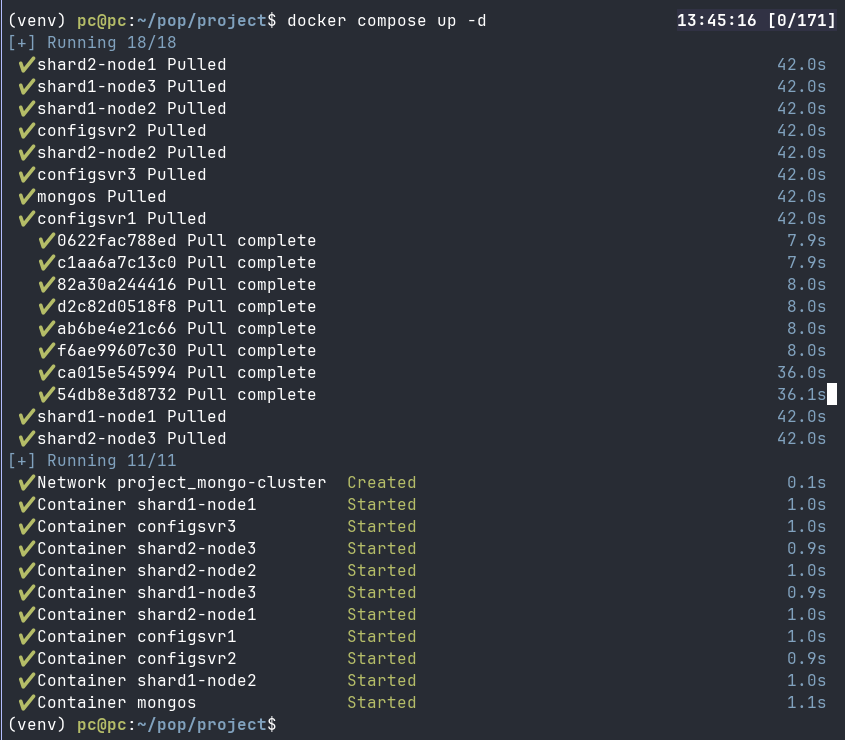
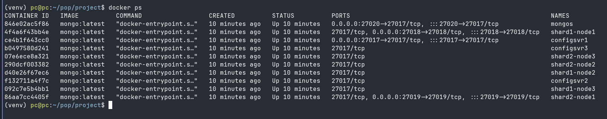
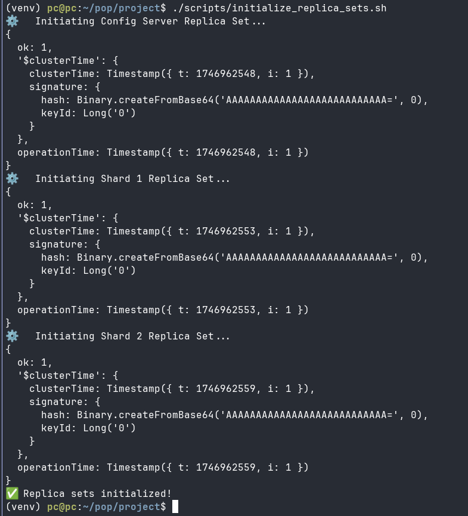
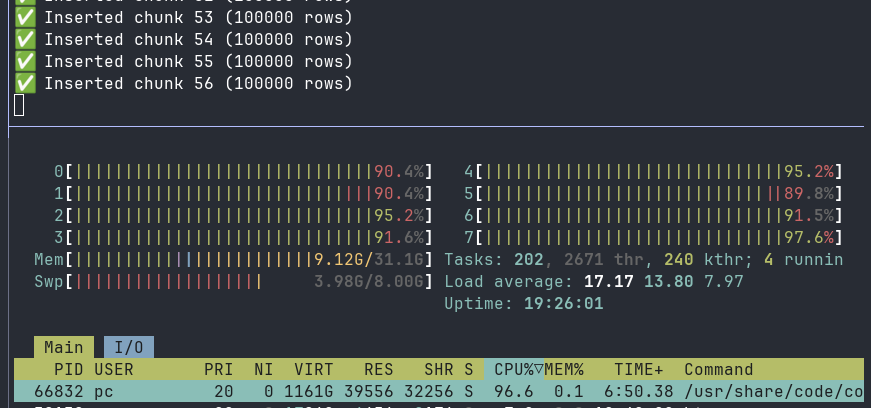
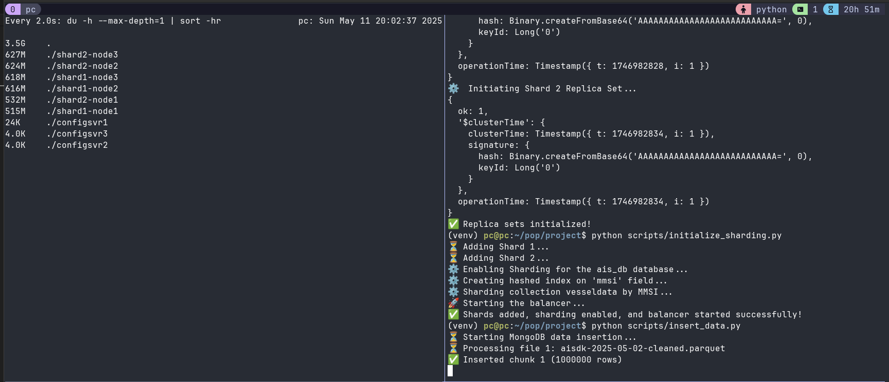
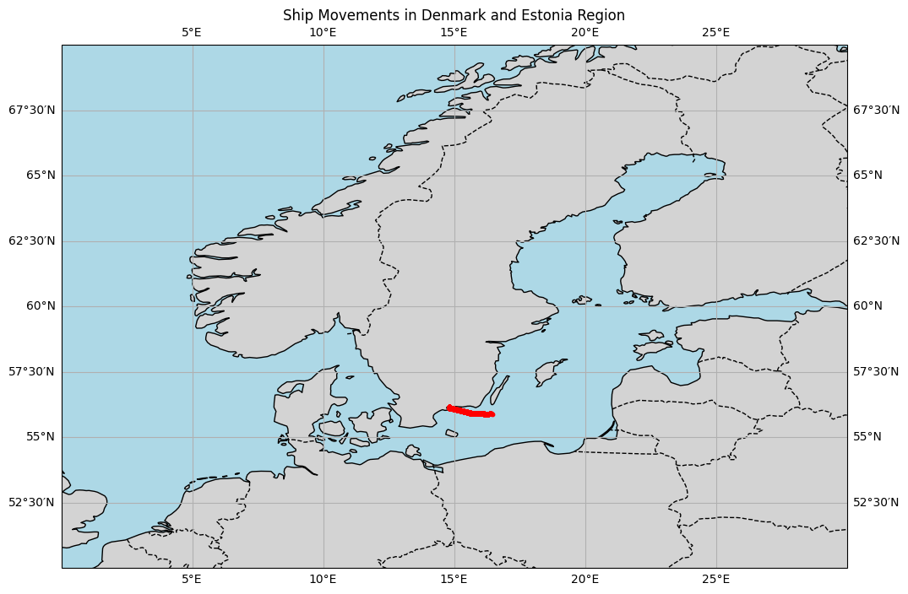

MongoDb Cluster Project
Intro
This project aims to demonstrate how to set up a MongoDB cluster, which can perform parallel processing through data sharding (a method of distributing data across multiple machines) and ensure data continuity by implementing database replication (copying data across multiple nodes to ensure availability).
Why Use a MongoDB Cluster?
MongoDB is favored for its built-in capabilities to handle sharding and clustering. This setup allows it to manage large-scale data with high availability and fault tolerance, making it a robust choice for distributed data systems. Even though AIS data is structured and could fit naturally into SQL databases like DuckDB, this project’s focus is to explore MongoDB’s unique features and capabilities in handling distributed data schemes.
Comparatively, MongoDB’s approach is more straightforward than configuring MySQL/MariaDB with Vitess, which requires additional tooling for scaling. Looking further, technologies like CockroachDB, a distributed SQL database offering sharding and replication, present interesting avenues for exploration in the field of distributed databases.
Key Objectives:
- Docker and Docker Compose Setup:
- We’ll start by setting up Docker, a platform that simplifies the deployment of applications using containers. With Docker Compose, you’ll create multiple Docker containers running MongoDB instances and connect them through Docker’s bridge network. This network provides isolated communication between containers, simulating a real-world database cluster environment.
- Initializing MongoDB:
- You’ll learn to initialize and configure the MongoDB instances. We’ll walk through setting up sharding, which allows efficient data distribution, and creating indexes, which enhance query performance by reducing data retrieval time.
- Handling AIS Data:
- The project downloads and processes AIS (Automatic Identification System) data. AIS is a vital maritime technology for tracking vessels. We’ll utilize Polars, a high-performance DataFrame library optimized for speed and efficiency, to clean and prepare the data. This cleaned data will then be ingested into the MongoDB cluster for further analysis.
Considerations
- MongoDB instances can heavily utilize RAM (Random Access Memory) due to their nature of holding data temporarily in memory before committing it to storage. Effective RAM management is crucial to maintain system performance, especially as data volumes grow.
Ensuring Reproducibility:
- This project is built in Python, and we provide a
requirements.txtfile to facilitate setting up the same environment on any machine. This file contains all the necessary libraries and their versions, ensuring that anyone following the guide can replicate the setup and results seamlessly.
Python
To get started with reproducing this project, you’ll need to clone the repository from the designated URL: (repository_url). It’s assumed that you already have Python installed on your system. To avoid any conflicts with your local Python installation, it’s recommended to create an isolated virtual environment using Python’s venv module. This ensures that the project’s dependencies do not interfere with your global Python environment.
Create a Virtual Environment:
- For Windows:
python -m venv venv- For Unix-like systems (Linux, macOS):
python3 -m venv venvThis command will generate a directory named venv, containing all the necessary files for maintaining an isolated Python environment.
Activate the Virtual Environment:
- On Windows, activate it by running:
.\venv\Scripts\activate- On Unix-like systems, use:
source venv/bin/activate
Activating the virtual environment changes your shell prompt, indicating that the environment is now active. This allows you to install packages without affecting your system-wide Python installation.
- Install Required Packages:
With the virtual environment activated, execute the following command to install the project’s dependencies:
pip install -r requirements.txtThe requirements.txt file contains a list of all necessary Python packages, ensuring that you have the same versions used during the project development.
By following these steps, you’ll establish a clean, isolated environment tailored specifically for this project, facilitating an error-free experience during setup and execution.
Docker
Introduction
What is Docker?
Docker is a platform for containerization, which represents a lightweight form of virtualization. It allows you to package applications and their dependencies into standardized units, called containers. These containers can run consistently across different computing environments, enhancing reproducibility and streamlining the deployment process. This capability enables users to replicate work environments seamlessly and maintain consistent software operations from development to production.
Why Docker Performs Better on Linux
Docker’s architecture leverages Linux kernel features such as namespaces and cgroups. These features allow Docker to run containers with minimal overhead by directly interacting with the kernel. As a result, Docker achieves optimal performance on Linux, benefiting from its native containerization support. On MacOS and Windows, Docker operates by running a Linux virtual machine to emulate these capabilities, which introduces additional overhead and may lead to less efficient use of system resources compared to native Linux environments.
Learning Resources
For more detailed learning, explore these helpful Docker resources: [Add URL1 here] and [Add URL2 here].
Installing Docker
To install Docker, visit the Docker website for the official installation instructions. This includes steps for installing Docker, Docker Compose, and for MacOS or Windows users, Docker Desktop. However, since this documentation primarily targets Linux users due to Docker’s native compatibility with Linux, the instructions provided will focus on terminal commands relevant to Linux systems.
What is Docker Compose?
Docker Compose is a tool that simplifies the configuration and management of multi-container Docker applications. It utilizes a YAML file, typically named docker-compose.yml, to define services, networks, and volumes required for an application. This central configuration allows you to launch an entire multi-service application with one command, significantly enhancing productivity and simplifying the management of complex environments.
Key Docker Compose Commands
- Starting Services:
docker compose up -d: Initializes services as defined in thedocker-compose.ymlfile. The-dflag runs the containers in detached mode, meaning they execute in the background, and your terminal remains available for other commands.docker compose up -d --build --pull: Includes the--buildflag to rebuild specified build contexts and the--pullflag to ensure services use the latest images from the registry.
- Listing Running Containers:
docker ps: Displays all currently running Docker containers, showing service names, container IDs, ports, and image names—tools essential for monitoring active services.
- Stopping Services:
docker compose down: Halts all running services defined by Docker Compose.docker compose down --rmi all --volumes: Removes associated resources such as images and volumes, effectively cleaning up your environment.- Stopping Individual Containers: Use
docker stop <container_id>to stop a specific container, which is useful for testing fault resilience. For instance, you can simulate primary MongoDB instance failures by selectively bringing down containers.
- Restarting Services:
docker compose restart: Restarts all services as specified in yourdocker-compose.ymlfile.
By mastering these commands and understanding their applications, you’ll streamline container management, enhance operational efficiency, and maintain robust control over your Dockerized applications.
MongoDb Setup
MongoDB is a NoSQL database, which means it does not rely on the traditional table-based relational database schema. Instead, it uses a flexible, JSON-like document model that is highly scalable and well-suited for handling large volumes of unstructured data.
One of the standout features of MongoDB is its ability to support both sharding and replication, which are essential for achieving horizontal scalability and ensuring data availability and reliability.
Role of Indexing
Indexing is critical in both sharded and non-sharded environments as it improves data retrieval speed. An index in MongoDB is a data structure (like a B-tree or hash) that helps in quick searches and reduces query execution time. Indexing allows the database to locate specific records swiftly without scanning entire datasets, which is especially crucial in large-scale applications.
In a Sharded Environment: Each shard maintains its own indexes to optimize data access locally. The combination of effective sharding and indexing ensures that queries are efficiently routed to the correct shard, minimizing inter-shard operations.
Combining Sharding and Indexing in MongoDB
Though MongoDB doesn’t employ traditional partitioning, it combines sharding and indexing to optimize data storage, retrieval, and management:
Choosing a Shard Key: The shard key is pivotal as it dictates the distribution of data across shards. A well-chosen shard key aligns with prevalent query patterns to maximize efficiency. In cases of unclear distribution, MongoDB can employ hashed sharding, distributing data evenly using a hash of the shard key.
Implementing Indexing: Deploying indexes on frequently queried fields, such as timestamps or identifiers (like MMSI numbers), expedites data retrievals across extensive datasets.
Replication
Replication in MongoDB is designed to ensure data reliability and fault tolerance. It involves maintaining copies of the same dataset on multiple servers, known as a “replica set.” If one server fails (e.g., due to hardware issues like a disk failure or resource exhaustion), another replica can take over, ensuring continuous data availability.
In a replica set, one server acts as the “primary,” receiving all write operations. The others are “secondaries” that replicate the primary’s data asynchronously. This setup enhances reliability by allowing the system to continue operating even if a primary fails, as a secondary can be promoted to primary.
In this project, we will configure 2 shards, each with one primary and 2 secondary replicas for redundancy.
Orchestration
Managing multiple shards and replicas requires careful orchestration to ensure seamless operation:
- MongoDB Router (mongos): This acts as the client interface, routing queries and operations to the appropriate shards based on the chosen shard key.
- Config Servers: These hold metadata and configuration details for the cluster, such as data distributions among the shards. It’s crucial to have an odd number of config servers to achieve a voting quorum, ensuring fault tolerance during decision-making and maintaining cluster integrity. Commonly, three config servers are recommended.
Preparation
Certainly! Here’s the refined section with improvements based on best practices:
Preparation
Set up your project directory with the following subdirectories to organize data effectively:
/imported_data: Will be used to store the raw.csvfiles downloaded from AIS Data Source.- the
/scripts/download_data.pywill handle the directory creation if it does not exist
- the
/cleaned_data: We will use python scriptprepare_data.pyto cleanup raw data. The clenaed datasets will be stored in this subdirectory. The python script will create the directory if it does not exist./persistent_data: This directory binds to Docker containers to provide persistent data storage. Ensures that your data remains intact, even if a container or the entire cluster is shut down and restarted. This is crucial for data continuity.
run mkdir persistent_data in temrminal prior to launching docker compose up -d to nesure the volums can be bound.
Note:
In this scenario, the ETL (Extract, Transform, Load) approach is preferable to ELT (Extract, Load, Transform). By cleaning and transforming data before loading it into the database, ETL reduces the data volume entering the system. This is critical for managing large AIS datasets efficiently, as it saves storage space and enhances query performance. ETL ensures only relevant and clean data populate the database, minimizing unnecessary resource use across multiple servers in a sharded environment. While ELT might be advantageous when leveraging powerful database processing capabilities, the upfront data refinement in ETL is more suited for optimizing resource allocation and ensuring database efficiency in this case.
Data
Importing data
We will source our data from the AIS Data Source by downloading the following datasets for analysis:
- aisdk-2025-05-01.zip
- aisdk-2025-05-02.zip
- aisdk-2025-05-03.zip
- aisdk-2025-05-04.zip
- aisdk-2025-05-05.zip
- aisdk-2025-05-06.zip
- aisdk-2025-05-07.zip
To manage the downloading of these datasets, we use a Python script, download_raw_data.py, that performs these tasks:
- Downloads each specified dataset.
- Extracts the contents from the downloaded ZIP files.
- Deletes the ZIP files once extraction is complete.
- Utilizes ThreadPoolExecutor to handle tasks concurrently, significantly reducing the time required for downloading, which is typically an I/O-bound and time-consuming task.
import pathlib
import urllib.parse
import requests
import zipfile
from concurrent.futures import ThreadPoolExecutor
# Define a local path under your current working directory
imported_data_dir = pathlib.Path.cwd() / "imported_data"
# Create the directory if it doesn't exist
imported_data_dir.mkdir(parents=True, exist_ok=True)
url = "https://web.ais.dk/aisdata/"
files = [
'aisdk-2025-05-01.zip',
'aisdk-2025-05-02.zip',
'aisdk-2025-05-03.zip',
'aisdk-2025-05-04.zip',
'aisdk-2025-05-05.zip',
'aisdk-2025-05-06.zip',
'aisdk-2025-05-07.zip',
]
def download_file(file_name, base_url, destination_dir):
"""Download a single zip file."""
full_url = urllib.parse.urljoin(base_url, file_name)
zip_path = destination_dir / file_name
try:
print(f"Downloading: {file_name} from {full_url}")
response = requests.get(full_url, timeout=10) # Added timeout for debugging
response.raise_for_status()
with open(zip_path, 'wb') as file:
file.write(response.content)
print(f"Download complete: {file_name}")
except requests.RequestException as e:
print(f"Failed to download {file_name}: {e}")
def extract_file(zip_path):
"""Extract a single zip file."""
if zip_path.exists():
print(f"Extracting: {zip_path.name}")
try:
with zipfile.ZipFile(zip_path, 'r') as zip_ref:
zip_ref.extractall(zip_path.parent)
print(f"Extraction complete: {zip_path.name}")
except zipfile.BadZipFile:
print(f"Failed to extract {zip_path.name}: Bad zip file")
def delete_file(zip_path):
"""Delete a single zip file."""
if zip_path.exists():
print(f"Deleting: {zip_path.name}")
try:
zip_path.unlink()
print(f"Deletion complete: {zip_path.name}")
except Exception as e:
print(f"Failed to delete {zip_path.name}: {e}")
# A reasonable number of workers given the I/O-bound nature
max_workers = 16
print("Starting downloads...")
with ThreadPoolExecutor(max_workers=max_workers) as executor:
executor.map(lambda f: download_file(f, url, imported_data_dir), files)
zip_files = list(imported_data_dir.glob("*.zip"))
print("Starting extraction...")
with ThreadPoolExecutor(max_workers=max_workers) as executor:
executor.map(extract_file, zip_files)
print("Starting deletion...")
with ThreadPoolExecutor(max_workers=max_workers) as executor:
executor.map(delete_file, zip_files)
print("Process complete.")Future Improvements
To enhance this process, consider implementing a method to automatically download the most recent datasets available on the source website. This could involve:
- Dynamically determining the current date range and downloading most recent datasets.
- Crawling the website to capture the latest available file entries and utilizing these URLs for download.
These improvements could ensure you’re always working with the most up-to-date datasets, removing the need to manually specify file names.
Data cleaning
The clean_data.py script is responsible for processing raw data files. It executes the following tasks:
- Loads all
.csvfiles located in theimported_datadirectory. - Cleans up the column names by standardizing them to lower case and replacing spaces with underscores.
- Drops duplicate rows, where uniqueness is defined by a combination of the
timestampandmmsicolumns. - Transforms the
timestampformat fromdd/mm/yyyytoyyyy-mm-dd. - Saves the cleaned data as Parquet files in the
clean_datadirectory, which is efficient for storage and query performance.
Data cleaning can be resource-intensive. Ensure your system has at least 32 GB of RAM. Configuring a swap file of at least 12 GB is recommended to maintain system stability during large data operations.
import pathlib
import polars as pl
import gc
# Create cleaned data directory
import_data_path = pathlib.Path.cwd() / "imported_data"
cleaned_data_path = pathlib.Path.cwd() / "clean_data"
# Ensure cleaned_data directory exists
cleaned_data_path.mkdir(parents=True, exist_ok=True)
# List all CSV files in the imported_data directory
csv_files = list(import_data_path.glob("*.csv"))
for csv_file in csv_files:
print(f"Processing {csv_file.name}")
df = pl.read_csv(csv_file)
df = df.rename({"# Timestamp": "timestamp"})
new_column_names = {col: col.lower().replace(' ', '_') for col in df.columns}
df = df.rename(new_column_names)
# Clean and parse Timestamp
df = df.with_columns(
pl.col("timestamp")
#.cast(str)
#.str.strip_chars()
.str.strptime(pl.Datetime, format="%d/%m/%Y %H:%M:%S", strict=False)
)
# Add 'date' column
df = df.with_columns(
pl.col("timestamp").dt.date().alias("date")
)
# Format Timestamp to ISO string (before saving)
df = df.with_columns(
pl.col("timestamp").dt.strftime("%Y-%m-%dT%H:%M:%S")
)
df = df.unique(subset=["timestamp", "mmsi"], maintain_order=True)
cleaned_filename = csv_file.stem + '-cleaned.parquet'
df.write_parquet(cleaned_data_path / cleaned_filename)
print(f"Saved cleaned file as {cleaned_filename}")
# Deleteing Dataframe and forcein garbace collection
del df
gc.collect()
print("Process complete")MongoDB Instances
In this section, we’ll cover the setup and initialization of MongoDB including configuration servers, shards, and the MongoDB router using Docker Compose.
docker-compose.yml
The docker-compose.yml file orchestrates multiple MongoDB components necessary for a sharded cluster environment. We’ll look at how to configure config servers, shards, and the router.
Config Servers Setup
The config servers hold metadata and settings for the MongoDB cluster, crucial for managing data across shards.
Image and Containers: We use the
mongo:latestimage to ensure we’re using the most recent stable MongoDB release for all components. Each config server is named configsvr1, configsvr2, and configsvr3.Command:
--configsvr: Indicates it’s a config server.--replSet cfgRS: Specifies the replica set name for the config servers, allowing them to replicate data for redundancy.--port 27017: The port on which the server listens.--wiredTigerCacheSizeGB 0.5: Limits the WiredTiger cache size to optimize memory usage.
Ports and Volumes:
- Maps the host port 27017 to the container’s port 27017, making it accessible.
- Binds
./persistent_data/configsvr1to/data/dbin the container, ensuring data persistence between restarts.
Networking: Uses the
mongo-clusternetwork, a custom Docker bridge network allowing inter-container communication within our MongoDB cluster.
configsvr1:
image: mongo:latest
container_name: configsvr1
command: --configsvr --replSet cfgRS --port 27017 --wiredTigerCacheSizeGB 0.5
ports:
- 27017:27017
volumes:
- ./persistent_data/configsvr1:/data/db
networks:
- mongo-clusterMongoDB Router (mongos) Setup
The mongos router is responsible for directing queries to the appropriate shards.
Dependencies: The
depends_onoption ensures the router starts only after the config servers are up and running.Ports and Command:
- The router listens on port 27020 (mapped internally to 27017), ensuring external access.
- Command:
mongos: Starts the router service.--configdb cfgRS/configsvr1:27017,configsvr2:27017,configsvr3:27017: Specifies the config servers to use.--bind_ip_all: Allows the container to be accessible externally.
mongos:
image: mongo:latest
container_name: mongos
depends_on:
- configsvr1
- configsvr2
- configsvr3
ports:
- 27020:27017
command: >
mongos --configdb cfgRS/configsvr1:27017,configsvr2:27017,configsvr3:27017 --bind_ip_all
networks:
- mongo-clusterNetwork Configuration
- Bridge Network: The
mongo-clusternetwork uses thebridgedriver, which is Docker’s default network type. It allows containers on the same network to communicate with each other while isolating them from other networks.
networks:
mongo-cluster:
driver: bridgeLaunching the Setup
To start the MongoDB cluster, run the following command in your terminal:
docker compose up -d
This will launch all configured MongoDB instances in detached mode, running the services in the background.
By following this setup, you create a robust MongoDB cluster with configuration servers and shards, ensuring data distribution and fault tolerance.
docker ps Shoudl show something similar

initialize relica set
This script is designed to initialize replica sets for a MongoDB sharded cluster setup. Here’s a concise and detailed breakdown:
- Initiate Config Server Replica Set:
- The script begins by initiating the replica set for the config servers, which manage metadata and configuration settings for the sharded cluster.
- It uses the
mongoshshell inside theconfigsvr1container to execute thers.initiate()command. - This command defines a replica set named
cfgRS, indicating it’s a configuration server replica set with three members (configsvr1,configsvr2,configsvr3), each listening on port27017.
- Initiate Shard 1 Replica Set:
- Next, the script sets up the first shard’s replica set.
- Again,
mongoshis used within theshard1-node1container to initiateshard1RS. - It makes
shard1-node1,shard1-node2, andshard1-node3members of this replica set, all listening on port27018.
- Initiate Shard 2 Replica Set:
- Finally, the script configures the second shard’s replica set.
- The initiation command runs in the
shard2-node1container, creating a replica set namedshard2RS. - The members include
shard2-node1,shard2-node2, andshard2-node3, using port27019.
- Verification and Delays:
- After each initiation, the script checks if the command executed successfully. If an error occurs, the script halts execution.
- Brief pauses (
sleep 5) are added after each configuration to ensure the changes have time to propagate throughout the network.
In summary, this script configures a MongoDB environment with distinct replica sets for configuration servers and two separate shard groups, essential steps in implementing a scalable and fault-tolerant sharded cluster.
#!/bin/bash
# Function to check if a command was successful
function check_status {
if [ $? -ne 0 ]; then
echo "❌ An error occurred with the last command. Exiting script."
exit 1
fi
}
# ---------- Initiate Config Server Replica Set ----------
echo "⚙️ Initiating Config Server Replica Set..."
docker exec configsvr1 mongosh --port 27017 --eval '
rs.initiate({
_id: "cfgRS",
configsvr: true,
members: [
{ _id: 0, host: "configsvr1:27017" },
{ _id: 1, host: "configsvr2:27017" },
{ _id: 2, host: "configsvr3:27017" }
]
})'
check_status
# Allow some time for the config server setup
sleep 5
# ---------- Initiate Shard 1 Replica Set ----------
echo "⚙️ Initiating Shard 1 Replica Set..."
docker exec shard1-node1 mongosh --port 27018 --eval '
rs.initiate({
_id: "shard1RS",
members: [
{ _id: 0, host: "shard1-node1:27018" },
{ _id: 1, host: "shard1-node2:27018" },
{ _id: 2, host: "shard1-node3:27018" }
]
})'
check_status
# Allow some time for the shard 1 setup
sleep 5
# ---------- Initiate Shard 2 Replica Set ----------
echo "⚙️ Initiating Shard 2 Replica Set..."
docker exec shard2-node1 mongosh --port 27019 --eval '
rs.initiate({
_id: "shard2RS",
members: [
{ _id: 0, host: "shard2-node1:27019" },
{ _id: 1, host: "shard2-node2:27019" },
{ _id: 2, host: "shard2-node3:27019" }
]
})'
check_status
echo "✅ Replica sets initialized!"
adding sharding
Sharding is crucial for scaling databases horizontally, meaning that data is distributed across multiple servers, allowing for high availability and load balancing. This is especially important for large datasets, ensuring efficient resource utilization and performance.
1 Added Shards to the Cluster:
First, we connect to the MongoDB cluster using the MongoClient. The cluster is accessed through the mongos process, which acts as the point of contact between the application and the MongoDB sharded cluster. It intelligently routes queries to the correct shards based on metadata and sharding keys.
By connecting via mongos, we leverage a centralized, intelligent query routing system crucial for scalable data operations.
client = MongoClient("mongodb://localhost:27020")Step 2: Add Shards to the Cluster
Next, we define and add our shards. Shards are essentially distributed chunks of your database, each managing a partition of the data. This helps alleviate bottlenecks by spreading data across multiple nodes.
We add shards using the addShard command. Each shard typically runs as a replica set—a group of mongod instances that maintain the same data set. These commands tell MongoDB how to distribute your database across multiple machines to optimize for both data redundancy and processing load.
Step 4: Set Up Indexing
client.admin.command("addShard", "shard1RS/shard1-node1:27018,shard1-node2:27018,shard1-node3:27018")
client.admin.command("addShard", "shard2RS/shard2-node1:27019,shard2-node2:27019,shard2-node3:27019")Step 4: Set Up Indexing
Before we shard a collection, it is crucial to set up an index on the field we intend to use as a shard key. Indexing optimizes both the query performance and the data distribution process.
Here, we choose to create a hashed index on the MMSI field. A hashed index provides an even distribution of the data across all shards, which is particularly beneficial when the distribution of MMSI values is unknown or uneven. The hashed index is a preferred choice when you anticipate a non-uniform distribution of key values. It effectively minimizes the risk of creating unbalanced shards, which can lead to performance bottlenecks.
vessel_collection.create_index([("MMSI", "hashed")])Step 5: Shard the Collection Finally, we shard the vesseldata collection in the ais_db database by the MMSI field using the hashed shard key. This step initiates the distribution of the data across all available shards based on the hash values of the MMSI field. Sharding the collection ensures that as the database grows, data is split intelligently, allowing the cluster to handle increased load without compromising performance.
client.admin.command("shardCollection", "ais_db.vesseldata", key={"MMSI": "hashed"})its very important to ensure, that the balancer service has started as well.
client.admin.command("balancerStart")Error Handling
Throughout this process, we include error handling to manage potential issues that might arise during the setup. This ensures robustness in the scripts and provides informative feedback to identify and fix issues quickly.
Whole initialize_sharding.py
from pymongo import MongoClient, errors
# Connect to the MongoDB sharded cluster via mongos
client = MongoClient("mongodb://localhost:27020") # Connecting to mongos
try:
# Add Shard 1 and Shard 2 to the cluster
print("⏳ Adding Shard 1...")
client.admin.command("addShard", "shard1RS/shard1-node1:27018,shard1-node2:27018,shard1-node3:27018")
print("⏳ Adding Shard 2...")
client.admin.command("addShard", "shard2RS/shard2-node1:27019,shard2-node2:27019,shard2-node3:27019")
# Enable sharding for the ais_db database
print("⚙️ Enabling Sharding for the ais_db database...")
client.admin.command("enableSharding", "ais_db")
# Create a hashed index on the sharding key before sharding the collection
print("⚙️ Creating hashed index on 'mmsi' field...")
vessel_collection = client["ais_db"]["vesseldata"]
vessel_collection.create_index([("mmsi", "hashed")])
# Shard the vesseldata collection by the MMSI field
print("⚙️ Sharding collection vesseldata by mmsi...")
client.admin.command("shardCollection", "ais_db.vesseldata", key={"mmsi": "hashed"})
# Start the balancer to redistribute data across shards
print("🚀 Starting the balancer...")
client.admin.command("balancerStart")
print("✅ Shards added, sharding enabled, and balancer started successfully!")
except errors.OperationFailure as e:
print(f"❌ Operation failed: {e}")
except Exception as e:
print(f"❌ Unexpected error: {e}")Inserting data
In this step we follwo follwoing logic - we read in all .parquet files that are available in the clean_data directiry. We split each data file into chunks of 100 000 rows. We insert each chunk separately.
Using the size of 100 000 rows per chunk balances between speed and system resource usage.
Given there are 10 instances of mongo db running with 2 shards and each shard has 2 replica set, the CPU is maxed out even in single file (not parrlell processing).

However very strange, that during the upload, the ncdu only shows that data is being ingested into shard1

After a lengthy period, the job was finished, but the cpu usage was still maxed out at 100% in all cores / threads. Then the redistribution started after the insert. which also took a while. This suggests the importance of not stopping the mondgo instances immidialty after data ingestion, but rather the need to wait until intenral processes are finished.
It would be great to have a better monitoring system fro the mongo db cluster
import polars as pl
from pymongo import MongoClient
from pathlib import Path
import gc
# MongoDB connection setup
client = MongoClient("mongodb://localhost:27020") # Connect to mongos router
db = client.ais_db
collection = db.vesseldata
# Configuration
parquet_dir = Path("clean_data") # Directory containing Parquet files
chunk_size = 100_000
# Function to insert a chunk of data into MongoDB
def insert_chunk(data_chunk, chunk_num):
"""Insert a chunk of data into the MongoDB collection."""
records = data_chunk.to_dicts()
collection.insert_many(records, ordered=False)
print(f"✅ Inserted chunk {chunk_num} ({len(records)} rows)")
del records, data_chunk
gc.collect()
# Process all Parquet files
print("⏳ Starting MongoDB data insertion...")
for file_number, file_path in enumerate(parquet_dir.glob("*.parquet"), start=1):
print(f"⏳ Processing file {file_number}: {file_path.name}")
df = pl.read_parquet(file_path)
total_rows = df.height
chunk_num = 1
# Insert data in chunks
for i in range(0, total_rows, chunk_size):
chunk = df.slice(i, chunk_size)
insert_chunk(chunk, chunk_num)
chunk_num += 1
print(f"✅ Completed processing file {file_number}: {file_path.name}")
print("✅ All data inserted successfully.")Indexing collection
Once the data insertion has finished and data was distributed accross shards, now we can insert collection level indexing that should increase the speed of data retrieval. We index on 3 columns:
- mmsi
- timestamp
- date
As these are columns to be used most often for selecting an object in the collection.
from pymongo import MongoClient
# Connect to the MongoDB router (mongos)
client = MongoClient("mongodb://localhost:27020") # Make sure the port is correct for your mongos
# Use consistent database and collection names aligned with your setup
# Assuming consistent naming aligning with previous scripts
db = client["ais_db"] # Change to "ais_db" if consistent with your previous setup
collection = db["vesseldata"] # Change to "vesseldata" for consistency
# Fields to index for efficient filtering and retrieval
fields_to_index = [
"timestamp",
"date",
"mmsi"
]
# Create indexes on these fields
for field in fields_to_index:
print(f"📌 Creating index on '{field}'...")
collection.create_index(field)
print("✅ All indexes created.")Plotting the travel of a certain ship.

import numpy as np
import pandas as pd
import matplotlib.pyplot as plt
import cartopy.crs as ccrs
import cartopy.feature as cfeature
import pymongo
# MongoDB connection setup
client = pymongo.MongoClient("mongodb://localhost:27020")
db = client.ais_db
collection = db.vesseldata
# Example function to fetch data based on MMSI
def get_ship_data(mmsi):
return pd.DataFrame(list(collection.find({"mmsi": mmsi}, {"latitude": 1, "longitude": 1, "timestamp": 1, "_id": 0})))
def plot_ship_movements(ship_data):
plt.figure(figsize=(12, 10)) # Increase figure size for better clarity
ax = plt.axes(projection=ccrs.PlateCarree())
# Add features to improve map appearance
ax.add_feature(cfeature.LAND.with_scale('50m'), facecolor='lightgrey')
ax.add_feature(cfeature.OCEAN.with_scale('50m'), facecolor='lightblue')
ax.add_feature(cfeature.COASTLINE.with_scale('50m'))
ax.add_feature(cfeature.BORDERS.with_scale('50m'), linestyle='--')
ax.gridlines(draw_labels=True, dms=True, x_inline=False, y_inline=False)
# Set extent for Denmark and Estonia region
ax.set_extent([0, 30, 50, 70], crs=ccrs.PlateCarree())
# Scatter plot for ship data
ax.scatter(ship_data["longitude"], ship_data["latitude"], color='red', marker='o', s=10, zorder=5)
plt.title('Ship Movements in Denmark and Estonia Region')
plt.show()
# Test with your MMSI
mmsi = 277466000
ship_data = get_ship_data(mmsi)
if not ship_data.empty:
plot_ship_movements(ship_data)
else:
print(f"No records found for MMSI: {mmsi}")